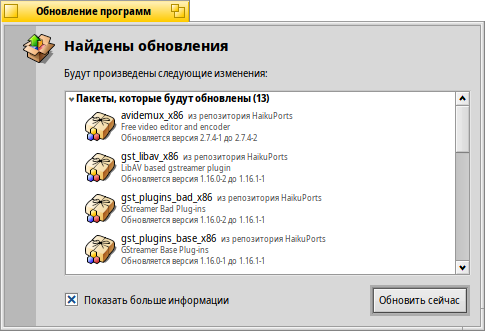

Обновление приложений (SoftwareUpdater)
| Расположение в Deskbar: | ||
| Расположение в Tracker: | /boot/system/apps/SoftwareUpdater | |
| Настройки хранятся по адресу: | ~/config/settings/SoftwareUpdater_settings |
Обновление приложений проверяет все активные репозитории (см. Настройки репозиториев) на наличие обновлений для установленных пакетов, включая системные обновления для самой Haiku. Загрузка и установка доступных обновлений происходит в один прием.
После запуска Обновление приложений проверяет наличие обновлений пакетов и отображает их в виде списка с указанием новой версии и кратким описанием. Можно выбрать , чтобы отобразить имя репозитория для каждого пакета и показать как старую, так и новую версии.
Кнопка начнет загрузку всех пакетов с их последующей установкой.
В зависимости от загруженных пакетов, возможно, вам придется перезагрузить Haiku, чтобы завершить процесс обновления. Обновленные приложения, как правило, требуется просто перезапустить, в то время как изменения в самой Haiku могут потребовать перезагрузки системы, чтобы вступить в действие.